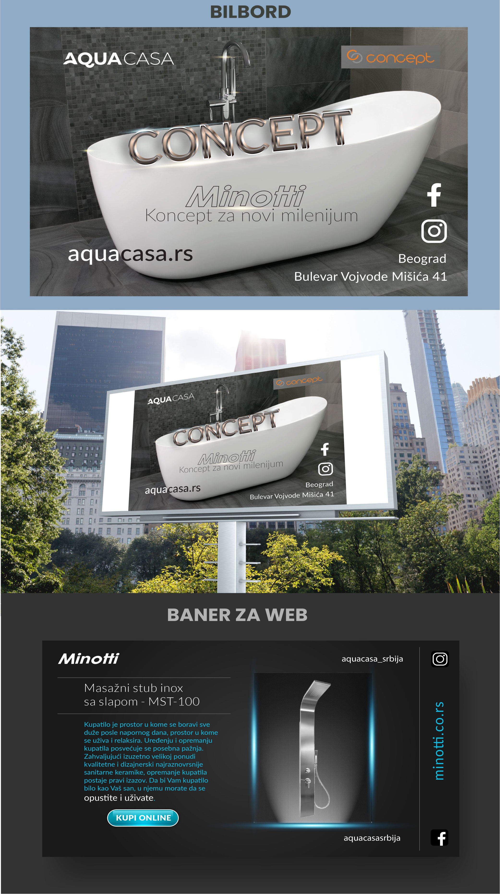
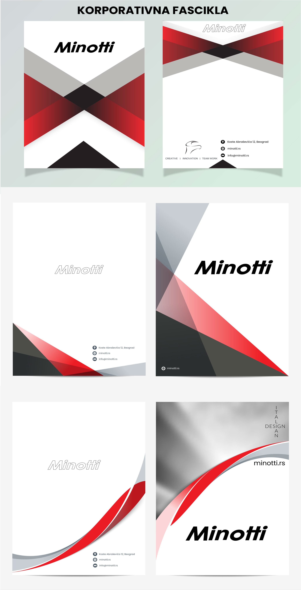
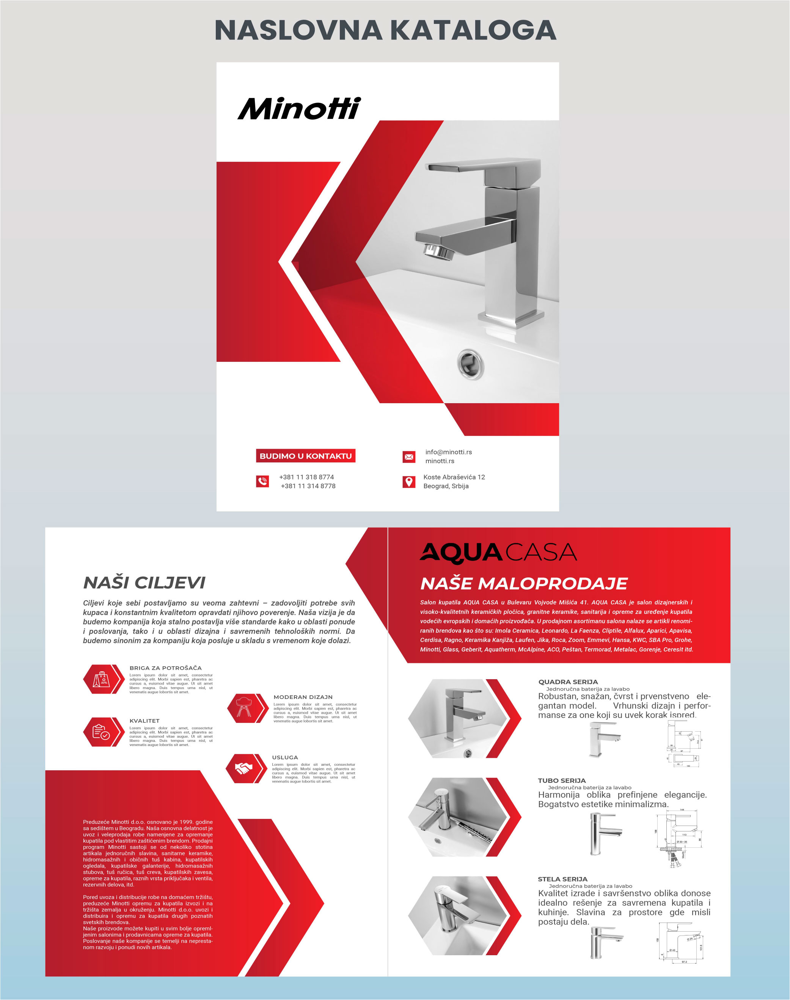
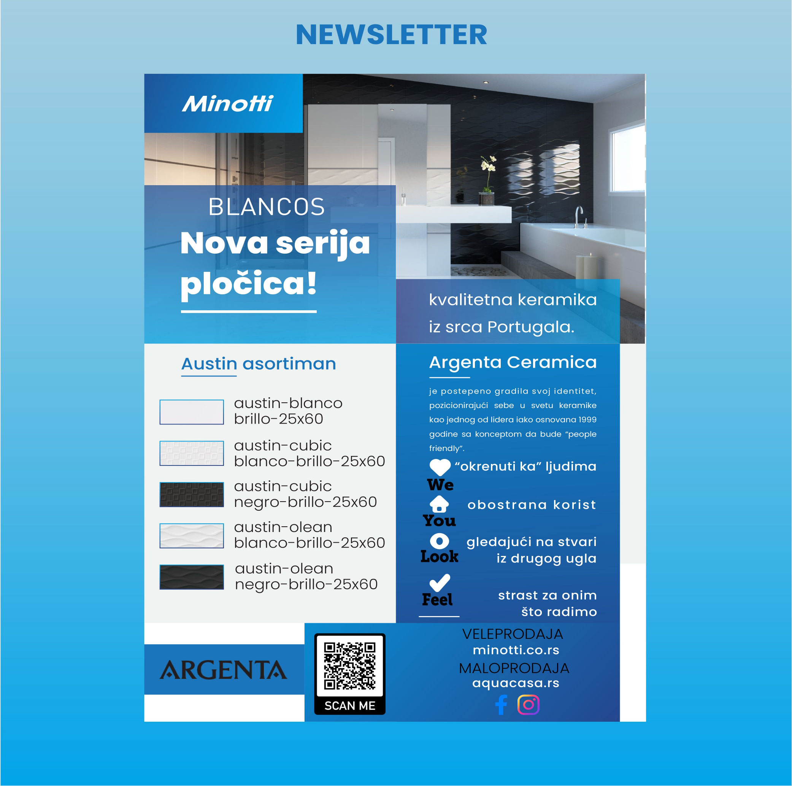

Format Diversity
Adapt one visual language to social feeds, vertical stories, web banners, billboards, catalogs, folders and email communication.
A broad creative engagement for a premium bathroom and ceramics retailer, covering social media, campaign visuals, outdoor advertising, web banners, catalog materials, corporate collateral and newsletter design.

The project brought together a wide range of design outputs created for one retail-focused brand ecosystem. The work covered everyday promotional needs as well as more structured brand materials — from social media feed visuals and stories to billboard concepts, web banners, catalog design, corporate folders and newsletter layouts.
The key challenge was not only to make each format visually effective on its own, but to keep the communication recognizable and commercially clear across very different channels and dimensions.
Product categories, campaign messages and promotional offers had to be translated into flexible layouts that could work both in fast-moving digital communication and in more formal print and outdoor applications.
Retail communication moves quickly. Different campaigns require different layouts, but the brand still needs to feel consistent across every touchpoint.
Adapt one visual language to social feeds, vertical stories, web banners, billboards, catalogs, folders and email communication.
Present product categories and promotional offers clearly without losing the premium visual tone expected from the brand.
Balance visual appeal with clear campaign hierarchy, strong calls to action and easy-to-understand promotional messaging.
Feed visuals, promotional posts, product presentation and campaign adaptations.
Vertical promotional formats designed for offers, new collections and product campaigns.
Billboard concepts and visual adaptations intended for large-format brand communication.
Campaign banners and product-focused digital creatives for online promotion.
Corporate folders, catalog covers and structured product communication for print.
Newsletter layouts combining product information, campaign messaging and brand presentation.
The visual direction balanced product presentation with a clean promotional style suited to retail communication. Strong hierarchy, visible campaign messages and clear product focus were used consistently across the materials.
Some formats required more dynamic campaign compositions, while others needed a cleaner corporate or catalog feel. The common thread was always the same: visual consistency, commercial clarity and a recognizable brand tone.

Selected examples showing how the visual system was adapted across digital, outdoor and print communication.



My work covered the design and adaptation of campaign materials across multiple communication channels — from social content and web banners to outdoor advertising, newsletters, catalogs and corporate print materials.
The role required translating different product messages and promotional needs into layouts that felt visually connected while still being optimized for the format in which they appeared.
The project therefore combined graphic design, campaign thinking, digital adaptation and print-oriented production rather than focusing on a single visual asset or one isolated channel.
The result was a broad set of communication materials supporting both ongoing retail promotion and wider brand presentation. The project demonstrates how one visual direction can be translated across social, web, outdoor, print and email while remaining aligned with practical commercial needs.